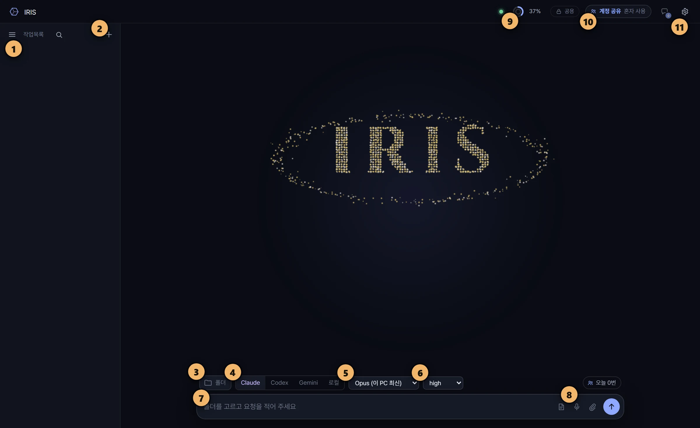
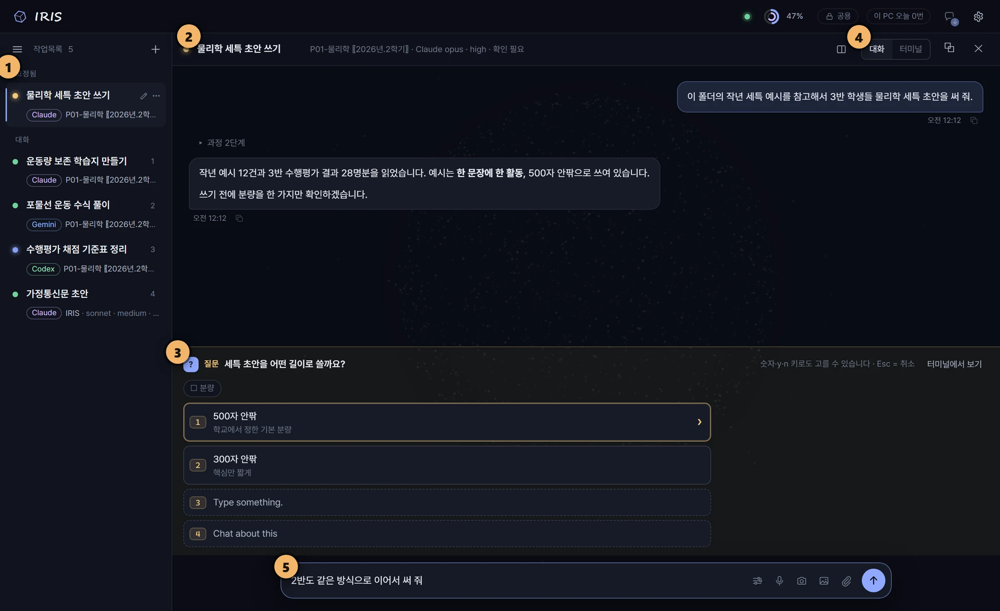
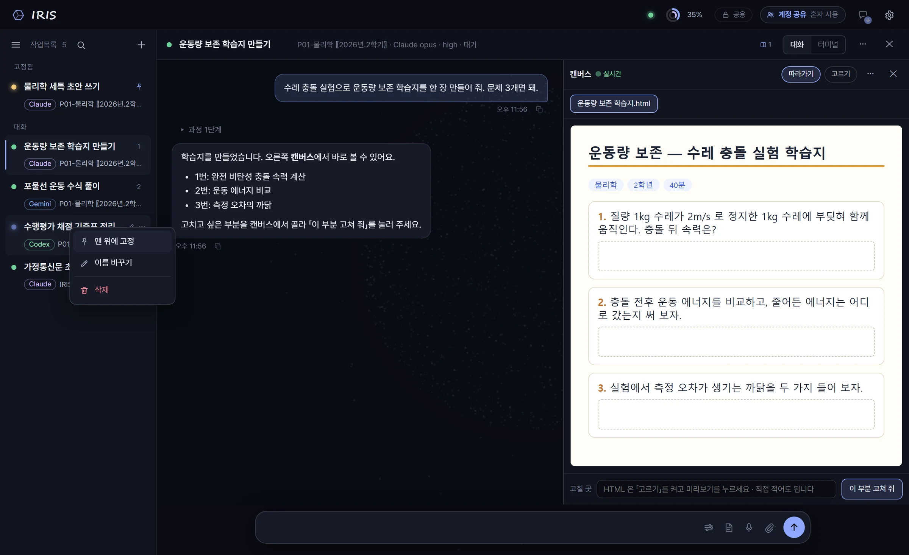
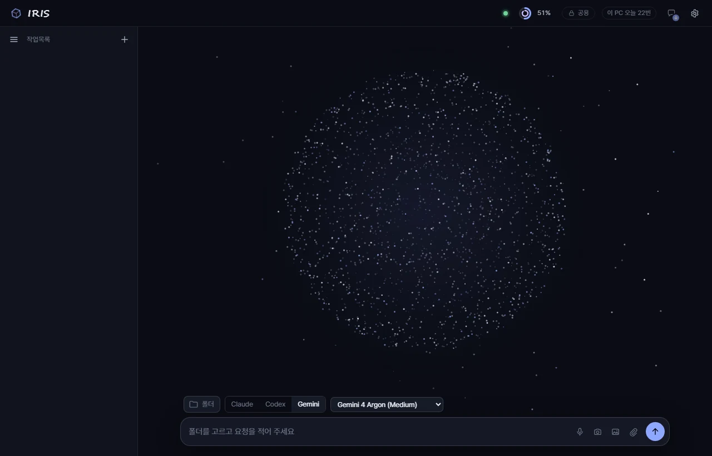
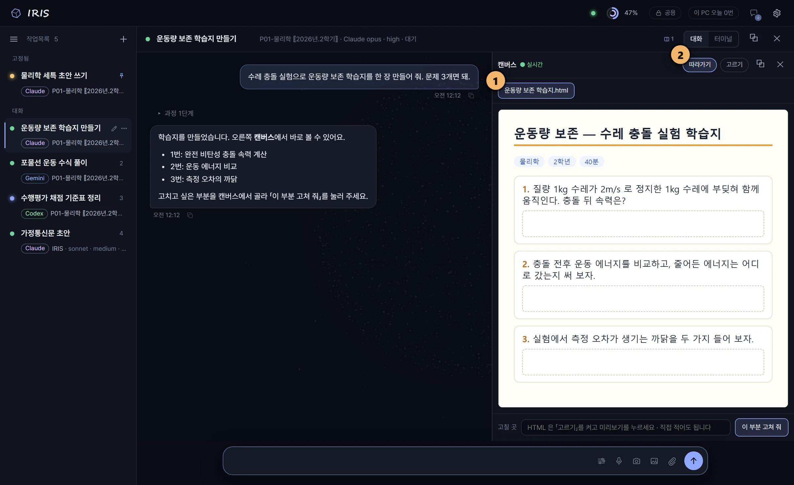
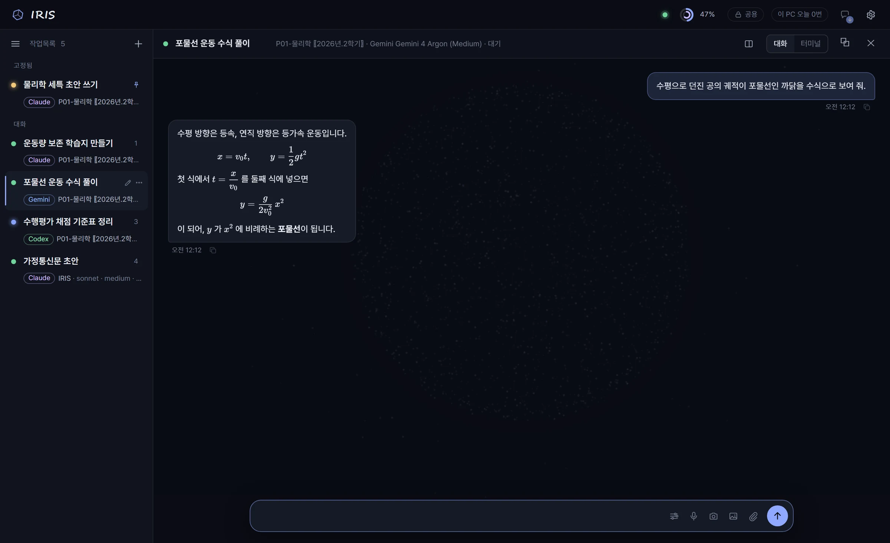
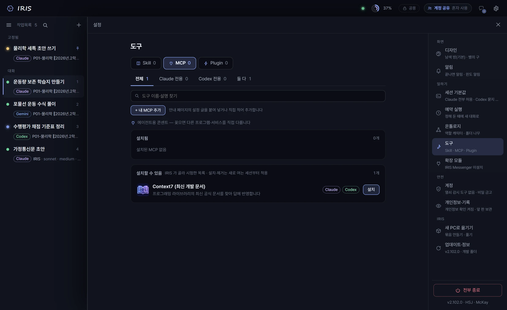
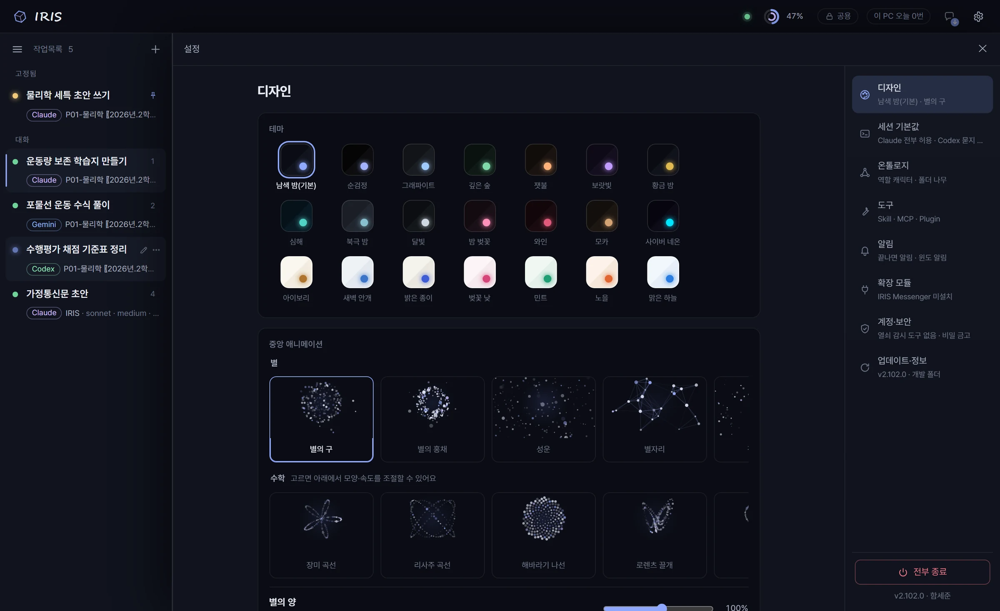
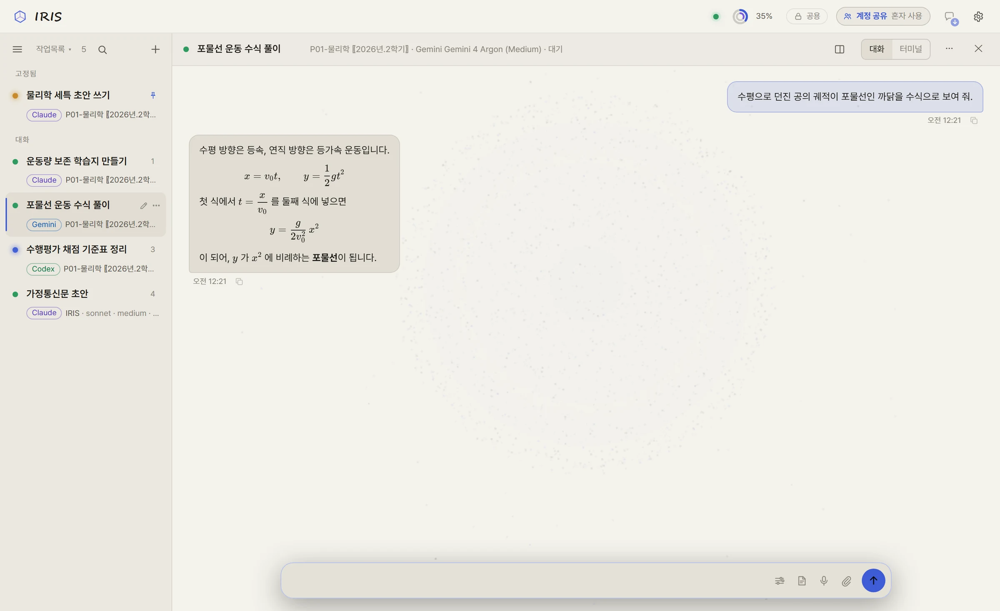
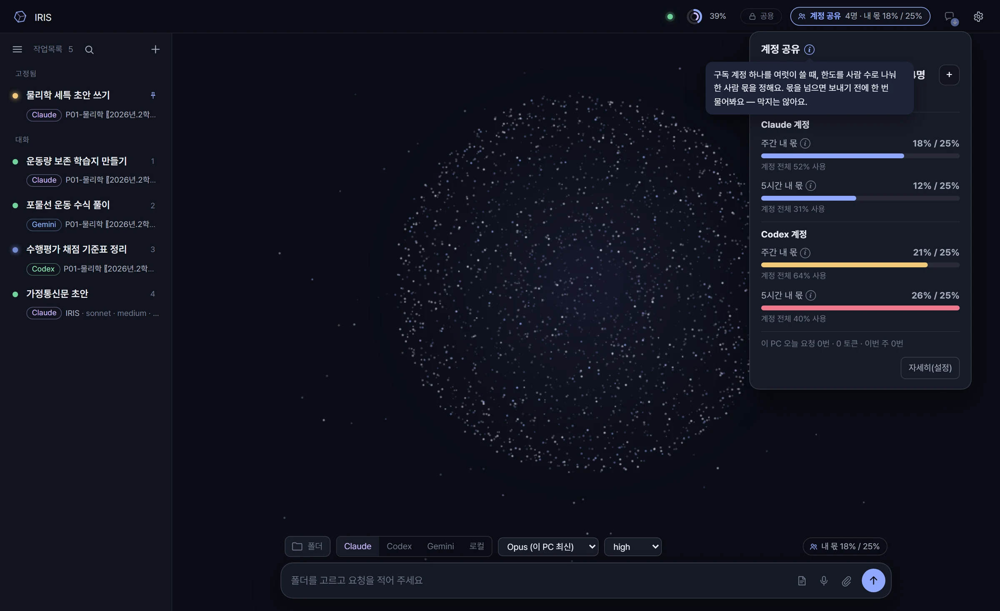

처음 쓰신다면 1장부터 4장까지만 읽어도 바로 쓸 수 있어요. 나머지는 필요할 때 펼쳐 보세요.
IRIS는 내 PC 안에 차리는 AI 비서 작업실이에요. 말만 해 주는 AI가 아니라, 내 폴더의 파일을 직접 읽고 만들고 고치는 AI 비서(에이전트 — 목표만 주면 스스로 계획하고, 도구를 쓰고, 결과까지 확인하는 AI)를 한 창에서 여러 명 부릴 수 있어요.
셋 다 갖출 필요는 없어요. 구독이 하나만 있어도 IRIS를 쓸 수 있고, 없는 AI의 단추는 흐리게 잠겨 있어요.
| 이런 일을 | 이렇게 |
|---|---|
| 여러 일을 한꺼번에 | 세특 쓰기, 학습지 만들기, 가정통신문 초안을 각각 다른 대화로 동시에 맡기고, 왼쪽 작업목록에서 오가며 봐요. |
| 내 폴더에서 바로 | AI가 고른 폴더 안의 한글·워드·엑셀·PDF 파일을 읽고, 새 파일을 그 폴더에 만들어 줘요. |
| 보면서 고치기 | AI가 만든 파일이 대화 오른쪽 캔버스에 실시간으로 떠요. 고칠 곳을 골라 다시 맡기면 돼요. |
| 안전하게 | 대화 기록은 이 PC에만 남아요. 중요한 일 앞에서는 AI가 먼저 물어보고, Esc 한 번이면 언제든 멈춰요. |
셋 다 대부분의 일을 해낼 수 있어요. 아래는 처음 고를 때의 길잡이일 뿐이니, 결과가 마음에 들지 않으면 같은 요청을 다른 AI에게 맡겨 비교해 보세요.
| 하려는 일 | 먼저 써 볼 AI | 까닭 |
|---|---|---|
| 세특·보고서·가정통신문 같은 긴 글 | Claude | 문장이 자연스럽고 분량·말투를 잘 맞춰요. |
| 한글·워드·PPT 문서 만들기 | Claude | 문서 만들기 도구(스킬)가 가장 많이 붙어 있어요. |
| 엑셀 성적 계산·채점표·자료 정리 | Codex | 숫자 계산과 표 다루기를 꼼꼼하게 확인해요. |
| 작은 프로그램·웹 페이지 만들기 | Codex | 코드를 고치고 다시 돌려 보는 일에 강해요. |
| 여러 자료 훑어 요약·아이디어 내기 | Gemini | 한 번에 많은 자료를 읽고 빠르게 정리해요. |
| 한 AI의 사용량이 다 떨어졌을 때 | 남은 AI | 머리줄 배터리를 보고 여유 있는 쪽으로 바꿔요. |
아무리 똑똑한 AI도 처음 온 학교에서는 헤매요. IRIS는 AI가 덜 헤매도록 세 가지를 갖춰 줘요.
| 비유 | IRIS에서는 | 하는 일 |
|---|---|---|
| 지도 | 역할·영역·프로젝트 폴더와 그 안의 안내 파일 | "여기는 물리학 수업 폴더, 이런 규칙으로 일해"를 AI가 스스로 읽어요. |
| 서류철 | 폴더에 넣어 둔 참고 자료 | 작년 예시·학교 양식·채점 기준을 넣어 두면 AI가 그것을 본떠요. |
| 연장 | 스킬·MCP 같은 도구 | 한글·엑셀·PDF를 직접 만들고 고치는 손발이 되어 줘요. |
| 낱말 | 쉬운 풀이 |
|---|---|
| 에이전트 | 목표만 주면 스스로 계획하고, 도구로 일하고, 결과까지 확인하는 AI 비서 |
| 모델 | 같은 회사 AI 안의 "두뇌 등급". 큰 모델은 똑똑하지만 느리고, 작은 모델은 빨라요. |
| 사고 깊이 | 답하기 전에 얼마나 오래 생각할지. 어려운 일일수록 높게. |
| 세션(대화) | 한 가지 일을 맡긴 대화 하나. 작업목록의 한 줄이에요. |
| 터미널 | AI가 실제로 일하는 검은 글자 창. IRIS가 이것을 보기 좋게 바꿔 보여 줘요. |
| 스킬 · MCP | AI에게 붙이는 도구. 스킬은 "일하는 요령서", MCP는 "다른 프로그램과 잇는 콘센트"예요. |
| 때 | IRIS에 맡기는 일 | AI · 폴더 |
|---|---|---|
| 출근 직후 | "오늘 1교시 학습지 만들어 줘" — 커피를 마시는 동안 캔버스에 학습지가 완성돼요. | Claude · P01-물리학 |
| 공강 시간 | "수행평가 결과 엑셀 정리해서 반별 평균 그래프로" — 다른 대화로 동시에 맡겨요. | Codex · P01-물리학 |
| 점심 뒤 | "현장체험학습 가정통신문 초안" — 학교 양식을 넣어 둔 폴더에서 바로. | Claude · D02-담임 |
| 회의 뒤 | 받아쓴 회의 내용을 붙여 넣고 "회의록으로 정리, 할 일만 따로". | Gemini · D03-업무 |
| 퇴근 전 | 작업목록을 훑어 끝난 대화는 정리하고, 내일 이어 할 대화는 고정해 둬요. | — |
설치는 zip 파일 하나로 끝나요. 화면에서 답할 질문은 두 개, 직접 해야 할 일은 구독 계정 로그인 하나뿐이에요.
처음 열면 AI 비서와 일하는 법을 알려 주는 튜토리얼이 떠요. 에이전트가 무엇인지, 일을 잘 맡기는 3가지(지도·서류철·연장)가 무엇인지 차례로 보여 주고, 중간에 내 작업 폴더를 만들어요. 이때 세 갈래 중 하나를 골라요.
| 고르는 것 | 하는 일 |
|---|---|
| AI와 인터뷰로 만들기 (추천) | AI가 한 번에 하나씩 물어봐요 — 맡은 역할, 도움받고 싶은 순서, 역할마다 요즘 하는 일. 답으로 폴더 지도를 그려 보여 주고 「좋아요」 하면 만들어요. 입력창에 요청이 채워지니 보내기만 누르면 돼요. |
| 직접 만들기 | 역할 카드를 고르고 폴더 나무를 내 손으로 고쳐서 만들어요. |
| 나중에 | 건너뛰어요. ⚙ 설정 → 업데이트·정보 → 「인터뷰로 폴더 만들기」로 언제든 할 수 있어요. 내 작업 폴더가 아직 없으면 첫 화면 위에 안내 띠가 떠서 바로 시작할 수 있어요(×로 닫으면 다시 뜨지 않아요). |
튜토리얼은 오른쪽 위 ×로 언제든 닫을 수 있고, ⚙ 설정 → 업데이트·정보 → 「튜토리얼 다시 보기」로 보던 쪽부터 다시 볼 수 있어요.
IRIS는 C:\IRIS 폴더 하나 안에 모든 것을 넣어요. 바깥에 생기는 것은 바탕화면 「IRIS」 바로가기 하나뿐이에요.
| C:\IRIS 안 | 무엇인가요 | 손대도 되나요 |
|---|---|---|
| R01-… 같은 역할 폴더 | 내 작업 폴더. 자료를 넣고 AI가 결과물을 만드는 곳 | 마음껏 |
| AGENTS.md · CLAUDE.md | AI가 맨 먼저 읽는 규칙 파일 | AI에게 고쳐 달라고 |
| IRIS-온톨로지-뷰.html | 내 폴더 지도를 그림으로 보는 페이지 | 보기만 |
| _document-templates | 한글·워드 문서 서식 모음 | 서식 추가는 가능 |
| _agent · _ontology | AI 프로그램·설정·기억, 폴더 지도 자료 | 건드리지 않기 |
| ✓ | 확인할 것 |
|---|---|
| ☐ | 바탕화면에 IRIS 바로가기가 생겼나요? |
| ☐ | IRIS를 열면 머리줄 왼쪽 위 연결 점이 초록색인가요? |
| ☐ | 입력창 위에서 내 구독의 AI 단추(Claude·Codex·Gemini)가 흐리지 않고 눌리나요? |
| ☐ | 「폴더」를 누르면 튜토리얼에서 만든 내 폴더가 보이나요? |
| ☐ | "안녕, 지금 몇 시야?"처럼 짧게 물었을 때 답이 오나요? |
| 이런 일이 생기면 | 까닭과 해결 |
|---|---|
| 설치 파일을 눌러도 아무 일이 없거나 "위험한 파일" 경고 | 「차단 해제」를 건너뛴 경우예요. zip 속성에서 차단 해제 후 다시 풀거나, 푼 폴더에서 cmd로 실행하세요. |
| "공간이 부족합니다" | C 드라이브에 3GB 이상 비워 주세요. 휴지통 비우기·다운로드 폴더 정리가 빨라요. |
| 검은 창이 잠깐 떴다 사라짐 | 정상이에요. 설치 화면은 브라우저에 열려요. 브라우저 탭을 확인하세요. |
| 설치 중 PC를 꺼 버렸어요 | 다시 「IRIS-설치.cmd」를 누르면 멈춘 단계부터 이어서 진행해요. |
| 로그인 창에서 다른 계정으로 들어갔어요 | 설정 → 계정에서 다시 로그인하거나, My Agent 대시보드에서 계정을 추가·정리하세요. |
| Gemini 단추만 잠겨 있어요 | Gemini 프로그램(Antigravity)이 아직 없거나 로그인 전이에요. 설치 후 Google 계정으로 한 번 로그인하면 풀려요. |
IRIS 화면은 크게 세 부분이에요. 왼쪽은 작업목록, 가운데는 무대(대화가 열리면 대화 화면), 아래는 입력창이에요.

| 보이는 것 | 뜻 | 눌렀을 때 |
|---|---|---|
| 연결 점 | 초록 = IRIS 엔진과 잘 연결됨. 다른 색이면 잠시 끊긴 것(저절로 다시 붙어요) | — |
| 메모리 링 · % | 바깥 고리 = PC 메모리 사용량. 많이 차면 노랑·빨강으로 바뀌어요 | 최근 30분 그래프 · 많이 차지하는 것 |
| 배터리 | AI별 남은 사용량. —는 읽는 중이거나 로그인 필요 | My Agent 대시보드 |
| 공용 / ○○ 공간 | 지금 화면이 공용인지 내 개인 공간인지 | 개인 공간 만들기·잠그기(8장) |
| 계정 공유 | 혼자 쓰면 「혼자 사용」, 나눠 쓰면 「4명 · 내 몫 18% / 25%」. 몫에 가까우면 노랑, 넘으면 빨강 | 사람 수 －/＋ · 내 몫 막대(8장) |
| 말풍선 단추 | IRIS 메신저(확장 모듈). 흐리고 ↓ 표시면 아직 설치 전 | 설치하거나 메신저 열기 |
| ⚙ | 설정. 점이 붙어 있으면 확인할 것이 있다는 뜻 | 설정 서랍 |
대화 한 줄에는 제목, 그 아래 AI 이름표(Claude·Codex·Gemini)와 폴더·모델이 보여요. 오른쪽 숫자는 Ctrl+숫자로 바로 가는 번호예요.
작업목록의 오른쪽 가장자리를 끌면 폭을 넓히거나 좁힐 수 있어요. 화면이 좁으면 Ctrl+B로 접어 두세요.
| 상태 점 | 뜻 |
|---|---|
| ● 노랑 | 내 답이나 허락을 기다려요 |
| ● 파랑 | AI가 일하는 중이에요 |
| ● 보라 고리 | 보조 AI가 나눠서 일하는 중 |
| ● 초록 | 일을 마치고 쉬는 중이에요 |
AI에게 일을 맡기는 순서는 언제나 같아요. 폴더 → AI → 요청 → 확인.

| 요령 | 예 |
|---|---|
| 재료를 알려 주기 | "이 폴더의 3반 수행평가 결과.xlsx를 보고…" |
| 모양을 정해 주기 | "한 학생당 500자 안팎, 한글 파일로 저장해 줘." |
| 먼저 묻게 하기 | "쓰기 전에 헷갈리는 점은 먼저 물어봐 줘." |
| 분야 | 이렇게 말해 보세요 |
|---|---|
| 수업 | "이 단원 교과서 PDF를 보고 50분 수업 지도안을 한글 파일로 만들어 줘. 도입·전개·정리로 나누고 활동 시간도 적어." |
| 수업 | "오늘 배운 운동량 보존으로 형성평가 5문제를 만들어 줘. 정답과 풀이는 따로 한 장에." |
| 평가 | "수행평가 계획서를 보고 채점 기준표를 상·중·하 3단계 표로 만들어 줘." |
| 평가 | "3반 수행평가 결과.xlsx에서 영역별 평균과 분포를 계산해 새 시트에 그래프로 정리해 줘." |
| 담임 | "다음 주 현장체험학습 가정통신문을 학교 양식 파일에 맞춰 써 줘. 준비물과 집합 시간을 표로." |
| 담임 | "이 폴더의 상담 메모들을 학생별로 한 줄 요약해 엑셀로 묶어 줘. 이름은 가려 줘." |
| 업무 | "이 회의 녹음 받아쓰기를 회의록 양식으로 정리해 줘. 결정 사항과 할 일을 따로." |
| 업무 | "작년 공문을 본떠서 올해 과학 축제 운영 계획 공문 초안을 써 줘." |
| 연구 | "이 논문 PDF 3편을 읽고 공통점·차이점을 표로 비교해 줘. 인용할 쪽수도 적어." |
| 연구 | "내 원고의 참고문헌이 본문 인용과 맞는지 점검하고 APA 형식으로 고쳐 줘." |
AI가 만든 파일은 대화를 시작할 때 고른 폴더 안에 생겨요. 대화에 파일 이름이 나오면 미리보기가 함께 뜨고, ⧉를 누르면 한글·엑셀 같은 원래 프로그램으로 열려요. 다른 폴더에 저장하고 싶으면 "바탕화면에 저장해 줘"처럼 위치를 말해 주세요.
AI가 혼자 정하기 어려운 순간에는 대화 아래에 노란 확인 카드가 떠요. 카드 왼쪽 위의 이름표로 어떤 물음인지 알 수 있어요.
| 이름표 | AI가 묻는 것 | 이렇게 답해요 |
|---|---|---|
| 허락 | "이 파일을 만들어도(고쳐도) 될까요?" · "이 명령을 실행해도 될까요?" | 내용을 보고 「예」 또는 숫자 키 |
| 질문 | 분량·형식처럼 여러 선택지 중 하나를 골라 달라는 물음 | 알맞은 선택지 · 없으면 직접 적기 |
| 계획 | "이런 순서로 일하겠습니다" — 큰 일을 시작하기 전 계획 승인 | 좋으면 승인, 아니면 고칠 점을 적기 |
| 검토 | 설정이 바뀌어 확인이 필요하다는 안내(주로 Codex) | 안내대로 고르거나 「터미널에서 보기」 |
| 신뢰 | 처음 쓰는 폴더를 믿고 일해도 되는지 | 내 폴더가 맞으면 믿기 |
익숙해지면 손이 자주 가는 기능들이에요.
끝난 대화도 아래 입력창에 적어 보내면 그 자리에서 다시 열려 이어서 일해요. 대화 도중 모델이나 깊이를 바꾸거나, Claude가 하던 일을 Codex에게 넘길 수도 있어요. 다른 AI로 넘기면 최근 대화 내용을 넘겨받아 이어서 해요.
🎤 단추나 Ctrl+M을 누르고 말하면 글자로 바뀌어 입력창에 들어가요. 소리는 PC 밖으로 나가지 않고 내 PC 안에서 바뀌어요(음성 기능이 설치된 PC에서만 켜져요).
AI가 만든 그림·PDF·웹 페이지, 한글·오피스 문서가 대화 안에 미리보기로 떠요. 옆의 ⧉를 누르면 원래 프로그램으로 열려요.
| 파일 종류 | 대화 안에서는 |
|---|---|
| 그림(PNG·JPG 등) · PDF | 그 자리에서 바로 보여요. |
| 웹 페이지(HTML) · 내 PC 주소 | 작은 화면으로 직접 눌러 볼 수 있어요(안전하게 격리돼요). |
| 한글 · 워드 · 엑셀 · PPT | PDF로 바꿔 보여 줘요(그 프로그램이 깔린 PC에서). |
| 그 밖의 파일 | 이름만 보여요. ⧉로 원래 프로그램에서 여세요. |
큰 일을 맡기면 AI가 보조 AI를 여럿 불러 나눠 하기도 해요. 그때 대화에 작은 칩이 생기고, 누르면 보조가 한 일을 옆 서랍에서 볼 수 있어요. 보조가 다 끝나야 「완료」 알림이 와요.

| 메뉴 | 하는 일 |
|---|---|
| 맨 위에 고정 | 자주 보는 대화를 목록 맨 위 「고정됨」 묶음에 붙여 둬요. IRIS를 껐다 켜도 그대로예요. |
| 이름 바꾸기 | AI가 붙인 제목을 내 말로 바꿔요. F2 또는 제목 두 번 클릭도 돼요. |
| 삭제 | 목록에서만 지워요. AI 프로그램의 원래 기록 파일과 만든 파일은 남아요. |
작업목록 머리의 휴지통을 누르면 끝난 대화를 한꺼번에 정리해요(고정한 대화는 빼고요).
맡긴 일이 끝나면 창 오른쪽 아래에 작은 알림이 뜨고, IRIS가 뒤에 숨어 있으면 윈도우 알림도 와요. 알림을 누르면 그 대화로 바로 가요. 알림이 귀찮으면 ⚙ 설정 → 알림에서 끌 수 있어요.
| 이렇게 이어 말하면 | AI가 하는 일 |
|---|---|
| "더 짧게, 핵심만 세 줄로" | 방금 결과를 줄여서 다시 써요. |
| "표로 바꿔 줘" | 글을 비교하기 쉬운 표로 정리해요. |
| "한글 파일로 저장해 줘" | 대화에만 있던 결과를 문서 파일로 만들어요. |
| "2번만 다시, 나머지는 그대로" | 고칠 부분만 콕 집어 바꿔요. |
| "왜 그렇게 했는지 설명해 줘" | 판단 근거를 알려 줘서 믿을 수 있는지 확인할 수 있어요. |
| "처음부터 다시, 이번엔 ○○ 기준으로" | 방향을 바꿔 새로 해요. 대화가 너무 길어졌으면 새 대화(＋)가 더 좋아요. |
| 같은 대화에 이어 말하기 | 새 대화(＋) 열기 |
|---|---|
| 방금 만든 결과를 고치거나 덧붙일 때 | 주제가 완전히 다른 일을 맡길 때 |
| 앞에서 정한 기준(분량·말투)을 그대로 쓰고 싶을 때 | 대화가 아주 길어져 AI가 앞 내용을 헷갈려할 때 |
| 같은 폴더의 자료로 다음 단계를 할 때 | 다른 폴더의 자료로 일할 때 |
| AI가 물어본 것에 답할 때 | 여러 일을 동시에 돌리고 싶을 때(대화마다 따로 일해요) |
원작에는 없고 고도화판에서 새로 들어온 기능들이에요.

입력창 위 AI 고르기에 Gemini가 생겼어요. Google AI Pro 구독으로 쓰고, 모델 목록은 그 PC에 깔린 Gemini 프로그램이 주는 그대로 보여 줘요(이름과 실제 모델이 항상 같아요).
Gemini는 모델 이름 안에 생각 깊이가 들어 있어서(예: Medium) 깊이 칸이 따로 없어요. 사용량은 대시보드의 GEMINI 칸과 머리줄 배터리 세 번째 칸에 보여요.

「고칠 곳」에 원하는 내용을 적고 「이 부분 고쳐 줘」를 누르면 입력창에 요청이 채워져요(보내기는 직접 해요). 캔버스는 대화 머리의 ▯ 단추나 Ctrl+Shift+K로 열고 닫아요.

AI가 답에 수식을 쓰면 대화 화면에서 예쁜 수식으로 그려져요.
또 한글(HWP)·워드 문서를 만들 때 진짜 수식 개체로 넣어 주는 기능이 들어 있어서, 문서를 열어 수식을 두 번 누르면 수식 편집기로 고칠 수 있어요.
보고서·논문을 쓴 뒤 "표절 검사해 줘"라고 하면, 참고 자료와 글자 그대로 겹치는 곳, 따옴표·출처가 빠진 곳, 본문 인용과 참고문헌 목록이 어긋난 곳을 찾아 알려 줘요.
| 점검 결과에 나오는 것 | 이렇게 고쳐요 |
|---|---|
| 글자 그대로 겹침 | 참고 자료와 똑같은 문장 — 따옴표로 묶고 출처를 달거나, 내 말로 바꿔 써요. |
| 출처·따옴표 빠짐 | 남의 생각을 옮겼는데 표시가 없는 곳 — 본문에 (저자, 연도)를 넣어요. |
| 인용 ↔ 목록 어긋남 | 본문에는 있는데 참고문헌에 없거나 그 반대 — 목록을 맞춰요. |
| 웹에 같은 문장 | 인터넷에 같은 글이 있는 곳 — 출처를 확인해 인용으로 바꿔요. |
참고 자료 폴더를 함께 알려 주면("참고 자료는 이 폴더에 있어") 더 정확하게 대조해요. 점검은 보조 도구일 뿐이니, 마지막 판단은 직접 해 주세요.

MCP는 AI에게 꽂는 도구 콘센트예요. 꽂으면 AI가 다른 프로그램·서비스를 직접 다룰 수 있어요. IRIS가 골라 시험한 도구는 「설치」 한 번이면 되고, 다른 도구는 「＋ 내 MCP 추가」에 그 도구 안내 페이지의 설정 글을 붙여 넣거나 칸을 채워 더해요.
머리줄 배터리를 누르면 열리는 대시보드에서 계정마다 남은 사용량을 봐요. Codex는 5시간 칸, Gemini는 GEMINI 칸이 새로 생겼고, 요금제에 실제로 있는 한도만 막대로 보여 줘요. 대시보드는 IRIS 테마 색을 그대로 따라가요.
| 대시보드에서 보이는 것 | 뜻과 쓰는 법 |
|---|---|
| 계정 카드 | 연결된 구독 계정 하나가 카드 하나. 왕관 표시는 지금 주로 쓰는 계정이에요. |
| 5시간 · 주간 막대 | 쓴 양이에요. 막대가 꽉 차면 그 한도가 다시 시작될 때까지 그 계정은 쉬어요. |
| 초기화 시각 | 한도가 다시 채워지는 때. 큰 일은 이 시각 직후에 맡기면 넉넉해요. |
| ＋ 계정 추가 | 다른 구독 계정을 더해요. 계정이 여럿이면 한 계정이 바닥나도 이어서 쓸 수 있어요. |
| ↻ 새로 고침 | 사용량을 지금 다시 읽어요(Gemini는 10분마다 저절로 갱신). |
| 장면 | 흐름 |
|---|---|
| 학습지를 보면서 다듬기 | "학습지 만들어 줘" → 캔버스에 바로 뜸 → 「고르기」로 2번 문제를 집어 "더 쉽게" → 캔버스가 실시간으로 바뀜 |
| 수식 많은 풀이 자료 | 대화 화면에서 수식으로 풀이 확인 → "한글 파일로, 수식은 한글 수식으로" → 문서 속 수식을 두 번 눌러 직접 고침 |
| 세 AI에게 같은 일 | 같은 요청을 Claude·Codex·Gemini 대화 세 개로 보냄 → 작업목록에서 오가며 결과 비교 → 가장 좋은 것을 고정 |
| 보고서 마무리 점검 | "보고서 다 썼어" → "표절·인용 점검해 줘" → 겹치는 곳·출처 빠진 곳 목록을 보고 고치기 |
{ }로 시작하는 몇 줄)을 복사해요.| 기능 | 쓰는 법 |
|---|---|
| 문서를 슬라이드·종이로 | 캔버스에서 PPT는 슬라이드로, 한글·워드·엑셀·PDF는 종이로 보여요. 슬라이드를 누르면 「2번 슬라이드 …」가 고칠 곳에 적혀, 하고 싶은 말만 덧붙이면 돼요. |
| 앞 판 견주기·되돌리기 | AI가 문서를 고치기 전 판을 저절로 보관해요. 캔버스에서 앞뒤를 나란히 보고 되돌려요. |
| 지난 대화 검색 | 작업목록의 돋보기 또는 Ctrl+Shift+F. 누르면 그 말이 있는 자리로 가요. |
| 보내기 전 개인정보 확인 | 전화번호·학번과 이름 같은 모양이 있으면 보내기 전에 알려 주고 가려서 보낼 수 있어요. 첨부한 문서 속도 봐요. 사진 속 글자와 이름만 적힌 글은 알아채지 못할 수 있어요. |
| 자주 쓰는 요청 서식함 | 입력창의 문서 모양 단추. 되풀이하는 요청을 이름 붙여 저장해 두고 골라 써요. |
| 대화 내보내기 | 대화 위 ⋯ → 대화 내보내기. 한글·워드·HTML 파일로 다운로드 폴더에 저장돼요. |
| 예약 실행 | ⚙ 설정 → 예약 실행. 요일과 시각을 정하면 그때 새 대화를 열어 일해요. IRIS가 켜져 있을 때만 돌고, 작업 폴더의 파일을 만들고 고치는 데까지만 저절로 해요. 놓친 예약은 켰을 때 물어봐요. |
| 새 PC로 옮기기 | ⚙ 설정 → 새 PC로 옮기기. 암호로 잠근 묶음 하나로 설정과 대화 기록을 옮겨요. 암호를 잊으면 열 수 없어요. |
PC에 Ollama(작은 AI를 내 컴퓨터에서 돌리는 무료 프로그램)와 모델이 있으면 AI 고르기에 「로컬」이 켜져요. 이 대화는 PC 밖으로 나가지 않고 구독 사용량도 쓰지 않아요. 문장 다듬기·초안·요약처럼 글만 다루는 일에 알맞아요.
⚙ 설정 → 디자인에서 IRIS를 내 취향대로 바꿔요.

어두운 테마 14종(남색 밤·황금 밤·심해·밤 벚꽃·사이버 네온 …)과 밝은 테마 7종(아이보리·밝은 종이·벚꽃 낮·민트·노을·맑은 하늘 …) 가운데 고르면 바로 바뀌어요. 낮에 밝은 교실에서는 밝은 테마가 눈이 편해요.

처음 화면 가운데의 움직이는 그림이에요. 별 무대(별의 구·성운·은하·오로라 …)와 수학 무대 10종(장미 곡선·해바라기 나선·로렌츠 끌개·4차원 정육면체 …)이 있어요. 수학 무대는 조절 막대로 모양을 바꾸고 수식도 함께 보여 줄 수 있어 수업 도입 화면으로도 좋아요.
| 무대 | 보이는 것 | 이어지는 수업 |
|---|---|---|
| 장미 곡선 | 꽃잎 모양으로 도는 곡선 | 극좌표 · 삼각함수 |
| 리사주 곡선 | 두 진동이 겹쳐 그리는 매듭 | 단진동 · 진동수 비 |
| 해바라기 나선 | 황금각으로 놓인 씨앗 | 황금비 · 피보나치 수열 |
| 로렌츠 끌개 | 나비 날개처럼 도는 궤도 | 카오스 · 미분방정식 |
| 푸리에 원(하트) | 원 여러 개가 그리는 하트 | 푸리에 급수 · 원운동 |
| 소수 나선(색스) | 나선 위에 드러나는 소수의 줄 | 소수의 분포 |
| 시에르핀스키 | 점을 찍을수록 나타나는 삼각형 | 프랙털 · 확률(혼돈 게임) |
| 토러스 매듭 | 도넛 위를 감는 매듭 | 위상수학 · 매개변수 곡선 |
| 4차원 정육면체 | 안팎이 뒤집히며 도는 입체 | 차원 · 사영 |
| 파동 간섭 | 두 물결이 만드는 무늬 | 파동의 간섭 · 중첩 |
IRIS를 켤 때마다 별이 금빛 IRIS 글자와 홍채 고리로 모였다가 흩어져요. 화면을 누르거나 아무 키나 누르면 바로 넘어가고, 디자인 설정의 「시작 인트로」로 끌 수 있어요.
| 묶음 | 여기서 하는 일 |
|---|---|
| 디자인 | 테마 · 중앙 애니메이션 · 별의 양 · 부드러움 · 시작 인트로 |
| 세션 기본값 | AI가 허락을 얼마나 자주 물을지(권한 모드) · 끊긴 대화 이어 열기 |
| 예약 실행 | 정해 둔 시각에 새 대화를 열어 일 맡기기 |
| 온톨로지 | 내 폴더 나무(역할·영역·프로젝트)와 폴더 사이의 관계를 그림으로 보기 |
| 도구 | 스킬·MCP·플러그인 보기 · 설치 · 내 MCP 추가 |
| 알림 | 끝나면 알림 · 윈도우 알림 켜고 끄기 · 미리 들어 보기 |
| 확장 모듈 | IRIS 메신저 같은 덧붙임 프로그램 설치·재시작 |
| 계정 | 로그인 열쇠 · 비밀 금고 복구 문구 · 계정 나눠 쓸 때 안내 · 계정 공유 사람 수 |
| 개인정보·기록 | 보내기 전 개인정보 확인 · 문서 앞 판 보관 · 대화 기록 폴더를 내 윈도 계정만 보기 |
| 새 PC로 옮기기 | 설정·대화 기록을 암호 묶음으로 만들고 새 PC에서 풀기 |
| 업데이트·정보 | 새 판 확인·적용 · 튜토리얼 다시 보기 · 인터뷰로 폴더 만들기 · 사용 설명서 · 만든 사람 정보 |
학교에서는 구독 계정 하나를 여러 선생님이 나눠 쓰거나, PC 한 대를 번갈아 쓰기도 해요. 그럴 때 알아 둘 것들이에요.
| 사실 | 그래서 |
|---|---|
| IRIS 대화는 이 PC에만 남아요 | 같은 계정을 쓰는 다른 선생님 화면에 보이지 않아요. |
| 웹·앱 대화는 서로 보여요 | claude.ai·chatgpt.com에서 한 대화는 같은 계정을 쓰는 모두의 목록에 남아요. 개인적인 일은 IRIS에서 하거나 「시크릿 채팅」·「임시 채팅」을 켜세요. |
| 사용량은 함께 써요 | 한 계정의 5시간·주간 한도를 모두가 나눠 써요. |
머리줄의 「계정 공유」 칩을 누르면 작은 창이 떠요. － / ＋로 이 계정을 쓰는 사람 수를 바꾸면, 계정 한도를 사람 수로 나눈 만큼이 「내 몫」이 돼요. Claude·Codex 계정마다 주간·5시간 내 몫이 막대로 보이고, 몫을 넘으면 보내기 전에 한 번 물어봐요(막지는 않아요). 같은 값은 ⚙ 설정 → 계정 → 「계정 공유」에서도 바꿀 수 있어요. 항목 옆 ⓘ에 마우스를 올리면 설명 말풍선이 떠요. 입력창 바로 위에도 같은 값이 사용량 배지로 보여요(나눠 쓰면 「내 몫 18% / 25%」, 혼자 쓰면 「오늘 N번」) — 누르면 같은 작은 창이 열려요.

| 함께 쓰는 사람 | 내 몫 | 이런 뜻이에요 |
|---|---|---|
| 1명(혼자) | 100% | 몫 계산을 하지 않아요(기본값). |
| 2명 | 50% | 주간 한도의 절반을 넘기면 보내기 전에 물어봐요. |
| 4명 | 25% | 예: 계정 사용률이 18%만큼 늘었는데 그동안 이 PC가 쓰고 있었다면 「18% / 25%」. |
같은 시간에 다른 선생님도 쓰면 양쪽 모두에 조금씩 잡혀 실제보다 많게 보일 수 있어요(덜 쓰게 되는 쪽으로 틀려요). 매주 한도가 새로 시작되면 0부터 다시 세요.
한 PC를 여럿이 번갈아 쓸 때는 머리줄의 「공용」 칩을 눌러 내 이름과 비밀번호(PIN, 숫자 4~8자리)로 개인 공간을 만들어요. 잠근 동안 만든 대화는 내 공간에서만 보이고, 10분 동안 손대지 않으면 저절로 잠겨요.
| ✓ | 수칙 |
|---|---|
| ☐ | 자리를 뜰 때는 머리줄 공간 칩을 눌러 내 공간을 잠가요. |
| ☐ | 학생 개인정보가 든 파일은 내 폴더에만 두고, 공용 폴더에 두지 않아요. |
| ☐ | 다 쓴 대화는 작업목록에서 정리(삭제)해 다음 사람이 헷갈리지 않게 해요. |
| ☐ | 웹(claude.ai·chatgpt.com)에서 개인적인 일을 할 때는 시크릿·임시 채팅을 켜요. |
| ☐ | 사용량이 빠듯한 주에는 「내 몫」을 보고 큰 일은 나눠서 맡겨요. |
| ☐ | IRIS를 끝낼 때는 창 ×로 닫아 모든 대화를 깔끔하게 정리해요. |
대부분은 당황하지 않고 한두 가지만 확인하면 풀려요.
⚙ 설정 → 업데이트·정보에서 새 판이 있는지 보고, 단추 하나로 받아서 적용해요. 고도화판 릴리스만 보고, 고도화판 서명이 맞는 파일만 적용해요(2.1.1부터 — 2.1.0을 쓰는 PC는 홈페이지에서 2.1.1을 한 번 새로 받아 설치하면 그다음부터 단추 하나로 돼요). 적용할 때 IRIS가 한 번 꺼졌다 켜지고, 닫힌 대화는 「종료됨」 카드의 ↻ 여기서 재개로 이어 가요. 새 판이 제대로 켜지지 않으면 직전 판으로 저절로 되돌아가요.
| 이럴 때 | 이렇게 해 보세요 |
|---|---|
| AI 단추가 흐리게 잠겨 있어요 | 그 AI의 구독 계정이 연결되지 않았거나 프로그램이 없는 거예요. 단추에 마우스를 올리면 까닭이 떠요. |
| "Login expired"가 떠요 | 로그인 기한이 지난 거예요. 다시 로그인하면 그대로 이어서 쓸 수 있어요. ⚙ 설정 → 계정도 확인하세요. |
| 대답이 한참 「생각 중」이에요 | 대화 머리의 터미널(Ctrl+T)을 눌러 실제 화면을 보세요. 질문이 떠 있으면 거기서 답하면 돼요. |
| 대화가 「종료됨」이 됐어요 | ↻ 여기서 재개를 누르거나, 입력창에 이어서 적어 보내면 다시 열려요. |
| 학교 PC에서 연결이 안 돼요 | IRIS는 윈도우의 학교 망 설정(프록시·보안 인증서)을 저절로 따라가요. 그래도 안 되면 학교 망에서 Claude·OpenAI·Google 주소가 막혀 있는지 정보 담당 선생님께 확인해 주세요. |
| PC가 느려지고 뜨거워요 | 머리줄 메모리 링을 눌러 무엇이 많이 차지하는지 보고, 안 쓰는 대화를 정리하세요. 7장의 「별의 양」 줄이기도 도움이 돼요. |
| IRIS를 완전히 끄고 싶어요 | 창의 ×를 누르면 모든 대화를 정리하고 꺼져요. 대화를 살려 둔 채 숨기려면 최소화(Ctrl+W)를 쓰세요. |
| 이런 글이 보이면 | 뜻 | 이렇게 |
|---|---|---|
| Login expired | 로그인 기한이 지났어요 | 다시 로그인 · 설정 → 계정 |
| usage limit reached (또는 You've hit your limit) | 그 계정의 5시간·주간 사용량을 다 썼어요 | 다른 AI로 바꾸거나 초기화 시각까지 기다리기 |
| Reconnecting… | AI 회사 서버와 다시 연결하는 중이에요 | 잠시 기다리기 · 계속되면 인터넷·학교 망 확인 |
| Hooks need review | Codex가 설정 변경을 확인해 달래요 | 터미널 보기에서 안내대로 2번 선택 |
| Do you trust the files in this folder? | 처음 쓰는 폴더를 믿어도 되는지 물어요 | 내 폴더가 맞으면 「Yes」 |
| Permission denied · EBUSY | 파일이 다른 프로그램에서 열려 있어 고칠 수 없어요 | 한글·엑셀에서 그 파일을 닫고 다시 요청 |
| Request interrupted by user | Esc로 하던 일을 멈췄다는 표시예요 | 이어서 새로 지시하면 돼요 |
IRIS 고도화판 홈페이지 iris.mathmckay.kr로 상황을 알려 주세요. 화면을 캡처해 함께 보내 주면 훨씬 빨리 찾을 수 있어요. ⚙ 설정 → 업데이트·정보 아래쪽의 판 번호(예: v2.102.0)도 함께 적어 주세요.
설치 zip을 푼 폴더의 IRIS-삭제.cmd를 두 번 누르면, 무엇을 지우고 남길지 먼저 보여 줘요. 기본값 「내 작업은 남기기」를 고르면 내 폴더는 C:\IRIS-보관-날짜로 옮겨 두고 프로그램만 지워요.
처음엔 Enter와 Esc만 알아도 충분해요.
| 대화 | |
|---|---|
| Enter | 보내기 |
| Shift+Enter | 줄 바꾸기 |
| Esc | 하던 일 멈추기 |
| ↑ ↓ | 예전에 보낸 요청 다시 불러오기 |
| 1~9 Y N | 확인 카드 답하기(입력창이 비어 있을 때) |
| Ctrl+M | 음성 입력 |
| Ctrl+V | 캡처한 그림·파일 붙이기 |
| 화면 | |
|---|---|
| Ctrl+N | 새 대화(폴더 고르기) |
| Ctrl+1~9 | 작업목록 ○번째 대화로 |
| Ctrl+B | 작업목록 접기·펴기 |
| Ctrl+T | 대화 ↔ 터미널 |
| Ctrl+Shift+K | 캔버스 열기·닫기 |
| Ctrl+D | My Agent 대시보드 |
| Ctrl+, | 설정 |
| F2 | 보던 대화 이름 바꾸기 |
| Ctrl+W | 창 최소화(대화는 계속) |
폴더를 고르고, 하고 싶은 일을 사람에게 말하듯 적으면 돼요.
모르는 것이 생기면 AI에게 "IRIS에서 ○○ 하는 법 알려 줘"라고 물어봐도 좋아요.